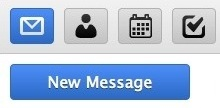
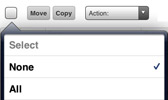
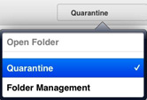
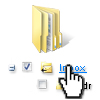
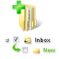

WebClient Tablet Interface
WebClient Tablet interface is optimized for touchscreens and the default choice for tablet browsers such as Safari on iPad, Chrome on Android tablets, or Silk on Kindle Fire. When you login from these devices, you will be automatically redirected to Tablet Interface.Tablet interface doesn't depend on JavaScript and is therefore compatible with old or mobile browser versions that cannot handle Full WebClient. All operations require only the left mouse button and clicking standard web elements like checkboxes, buttons and pull-down menus. There are no context menus or window pop-ups.
Tap

The icon toolbar gives you finger-friendly access to all the essential mail and groupware functions- divided into scopes that correspond to the colored icons in the upper menu.
- Address Book
- Calendar
- Tasks
- Notes
- Files
To receive new messages, click the envelope icon at the top of the screen.

To start composing a new message, create new contact or distribution list, new event or meeting invitation, new task, new note or upload a new file, click the corresponding icon in the toolbar and click the prominent New button.
For today's messages, only the time is shown. For older emails, only the date is shown. If you want to see both the information, hover the mouse over it- the date and time is displayed. To see full headers, click the Details button.
Rotate

Horizontal View shows all your favorite folders in a list on the left side. The current folder is in bold with a dot. To add more folders to the list, use Folder Management option. Vertical View collapses the folder list into a drop-down selection to the right. Tap the button with the name of the current folder to access other folder options.

The Folder Management option allows you to access or create a shortcut to a folder that is not listed yet, and have it quickly accessible. It also allows to add, rename, remove folders or make a folder default.
Swipe

Natural direction swiping is supported in all paging views (list of emails, contacts, all calendar views and so on) and allows you to advance and go back in the lists just like flipping through pages in a book:
Next page: from right to left
Previous page: from left to right (as on the picture above)

As an alternative to swiping with your finger, you can use paging controls at right (repeated at the top and bottom for easier access), which also show the current position and total number of pages.

You can swipe between messages, contacts, notes and so on. As an alternative there are arrows to go to the next message or the previous one after opening a message.
Fast Reply

When you don't need special formatting or set delivery options, the Fast Reply gives you exactly that- a text area to reply to the original sender of the message you are currently viewing.
Select
This only applies to items on the current page
- to select all items on the page, use All, or limit selection to Read or Unread
- to deselect them use None
- use Invert selection to select all but those that currently have checkbox next to them
Or use the individual checkboxes next to each item in the list to make your selection and then perform actions with them.
To select all messages in the folder, you may need to increase the number of listed items in Settings - General.
Manage

After having selected one or more items (the checkbox is ticked), you can carry an action on them using the actions buttons (e.g. Delete, then you will be asked to confirm the deletion).

You can select other infrequent actions from the Action: pulldown menu (e.g. Mark As Unread, Blacklist).
Search

Type a phrase to search for and search in all aspects of the data currently displayed (in email subjects/senders/recipients, in contact names/addresses etc.) or use keywords to limit the search to a specific criteria (for example, subject:office). The list of available keywords is at the end of this help.
To cancel the search, tap any toolbar icon or folder, or delete everything in the search toolbar and click Search.
Fight Spam
Use the Quarantine option in folder list to access your whitelist and blacklist. Here you can see email addresses that are always allowed or always rejected. You can delete the addresses or move them from blacklist to whitelist and vice versa.
To add spam or unsolicited commercial message sender to a blacklist:
- in Quarantine list, select Blacklist folder and click New Item button
- in Email view, place a checkbox next to the email and select Blacklist from Actions: menu
- in Email view, place a checkbox next to the email, click Move and select
To make sure you can access your Spam folder from Copy/Move menu, use the Folder Management option and Link the Spam folder to pin in into your favorite folders list.
Manage Folders

Link folder means to create a link to this folder in the favorite folder list. A link allows you to have your most important folders easier accessible from folder list and in Copy/Move options. You can also name the link with a descriptive name– it doesn't need to correspond with the actual folder name. The custom name will then appear in parenthesis in Folder Management tree.

Open folder by clicking the folder name is useful to access a folder that is not linked in the left menu, but you are not accessing the folder too often. The folder will open like any linked one.

Add folder creates a new folder. You need to specify the folder type- whether you will want to store mail, contacts or other types of items in the new folder.

Rename folder will rename the folder. If there is a link to that folder in left menu, the link will not be affected.

Make default folder will change to where messages are received, sent or saved. Default folders are always accessible from the favorite folders list and cannot be renamed or deleted.

Remove folder will permanently delete all contents of the folder (when you click "Empty") or permanently delete all contents of the folder and the folder itself (when you click "Delete").
Customize

Settings button (between the Help and the Logout icons in the top right corner) allow you to customize the Tablet interface. Various settings are organized into categories that appear as folders (on left side in tall view or on the right dropdown in wide view).

- General- change date/time format, specify number of items on page, enable Trash, automatically add recipients to contacts, change password and more
- Compose- set to always request read confirmations, always put sent messages to Sent folder, edit your signature, change default font and more
- Personalities- add/edit/delete multiple personalities (full name and email address as it appears to the email recipient)
- Autoresponder- an auto-reply function with useful settings like Respond Once to each recipient, respond only within certain hours of the day or never respond to select addresses
- Forwarder- to forward or copy incoming email messages to any other email address
Cancel

Use the browser Back button to return where you were or cancel editing a message, contact, calendar. Any edits you did will be lost. Or just click any toolbar icon.
Switch

Using the links to Advanced Interface, Mobile Interface, you can quickly switch between interfaces, without needing to give your login name and password again. Advanced interface may not work if you are using an older or mobile browser.
Smart Attach

On Android tablets and in desktop browsers you can upload attachments to messages. Ticking the checkbox "Use SmartAttach" attachments will be stored on the server (and in your Files) and delivered via download links embedded in the email. This makes delivery to mobile users faster and more efficient.
WebMail klient je možné ovládat stejným způsobem, jako bežnou Windows aplikaci
- pravé tlačítko umožňuje otevřít dialogová okna
- Přes tažení myši a držení objektů (Drag and Drop) je možné přesouvat objekty mezi složkami
- Fungují klávesové zkratky
- Při použití navigačních funkcí prohlížeče dojde k odhlášení uživatele
Kapitoly
Ovládání oken
Ovládání klávesnice
Tipy pro práci s elektronickou poštou
Certifikáty
Ovládání kalendáře
Instant messaging
Sdílení
Voice over IP
SmartAttach
Ovládání oken
- Pomocí ovládacích prvků v rohu okna je možné měnit jeho velikost
- Klikněte na [_] pro minimalizaci do nástrojové lišty na pravé straně
- Pro obnovení velikosti okna klikněte na minimalizovanou ikonu v liště
- Klikněte na [x] pro zavření aplikace
- Dvojím kliknutím na v levém horním rohu lze uzavřít okno
Ovládání klávesnice
| PgUp, PgDn | Klávesy je možné použít k listování mezi jednotlivými zprávami |
|---|---|
| Up, Down | Klávesy je možné použít k listování mezi jednotlivými zprávami v centrálním zobrazení zpráv |
| Enter | Otevře aktuální zprávu |
| Shift+Up, Shift+Down | Možnost volby jednotlivých zvolených položek |
| Hold Shift+left click | Možnost volby série položek v seznamu |
| Hold Ctrl+left click | Označení nebo odznačení jednotlivých zpráv |
| Ctrl+A | Zvolit vše |
| End | Skočit na poslední položku v seznamu |
| Home | Skočit na první položku v seznamu |
| + | označit zprávu |
| - | odznačit zprávu |
| 0..5 (keypad) | Nastavit barevné označení |
| r | Odpovědět |
| R | Odpovědět všem příjemcům |
| f | Předat |
| F | Předat jako přílohu |
| e | Označit jako přečtené |
| u | Označit jako nepřečtené |
| c | Kopírovat do složky |
| m | Přesunout do složky |
| n | Kompozice nové zprávy |
| Delete | Smazat |
| Esc | Uzavřít okno s dialogem pro potvrzení |
Certifikáty
- Ujistěte se, že jste v nastavení účtu nahráli privátní klíč (PKCS#12).
- K podepsání zprávy použijte tlačítko Podepsat při kompozici zpráv.
- Pro šifrování zprávy potřebujete veřejné klíč (PKCS#7). Ten je možné pro jednotlivé příjemce nahrát přímo v seznamu kontaktů.
Zprávy jsou dešifrována pomocí privátního klíče (PKCS#12). Ověření certifikátu probíhá pomocí veřejného klíče odesilatele (PKCS#7), který byl předtím nahraný do kontaktu.
Ovládání kalendáře
- Pro vytvoření nové události klikněte do kalendáře a pomocí tažení myší nadefinujte novou událost
- Novou událost je možné vytvořit také pravým tlačítkem
- Změnit existující událost je možno kliknutím pravým tlačítkem
- Celodenní událost lze vytvořit dvojitým klikem na den
- U každé události je možné nastavit upomínač. Ten zasílá notifikace na e-mail nebo Instant Messaging.
Instant messaging
- Kliknutím ikonku v pravém horním rohu je možné změnit svůj stav na Online
- Kliknutím na šedou ikonku je možné schovat celý pravý IM sloupec
- Zobrazení uživatelů je možné měnit pomoci držením objektu a tažením myši
- Použijte vCard ke změne detailů jednotlivých uživatelů a prohlížení jejich fotek
Sdílení
- Pro sdílení složek klikněte pravým tlačítkem na složky, které chcete sdílet a nastavte práva pro sdílení složky.
- Pro zobrazení účtu, který Vám sdílí nějaké data, klikněte pravým tlačítkem na seznam složek a zvolte funkci Přidat sdílení účet.
Použití příloh SmartAttach
- Při komponování nové e-mailové zprávy uživatel volí, zda má systém použít klasickou přílohu nebo funkci SmartAttachment.
- Přikládání souboru probíhá klasickou cestou.